Sacred Markers: Local Review
Six reusable meshes. Three exported LODs each. Native Cesium ModelGraphics. No publication.
Blender Lineup
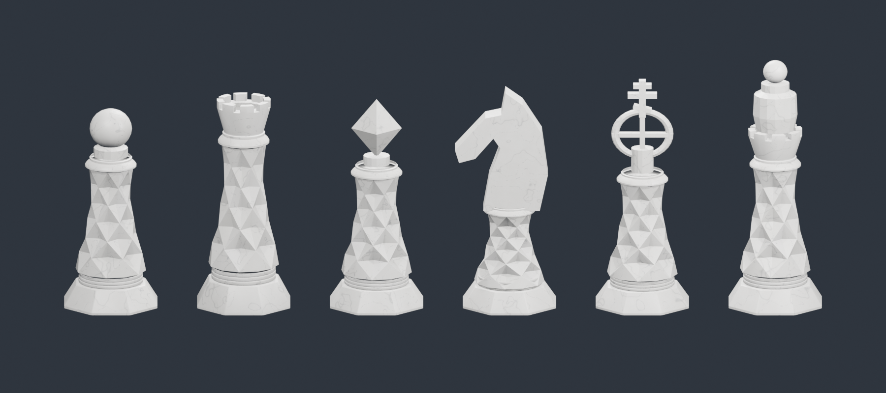
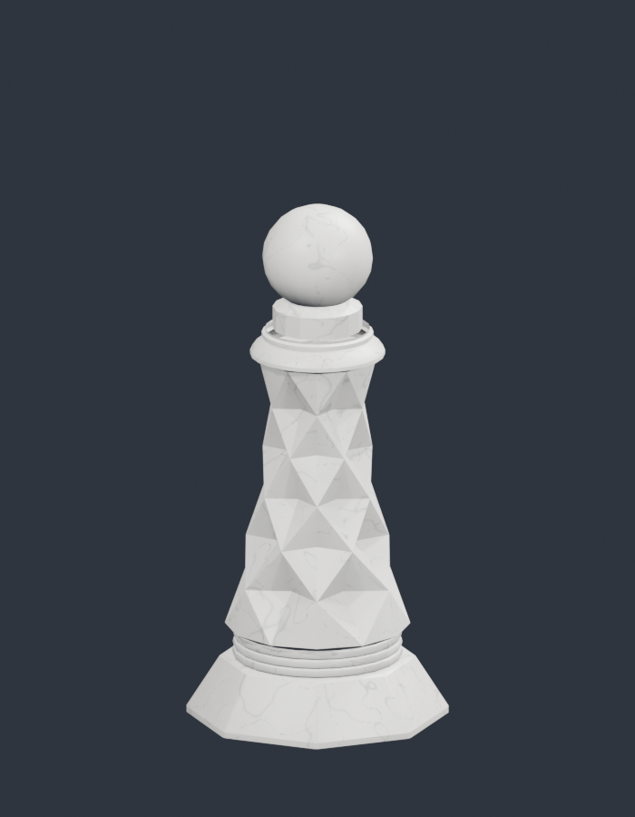
Saint: 5332 / 3500 / 1192 triangles
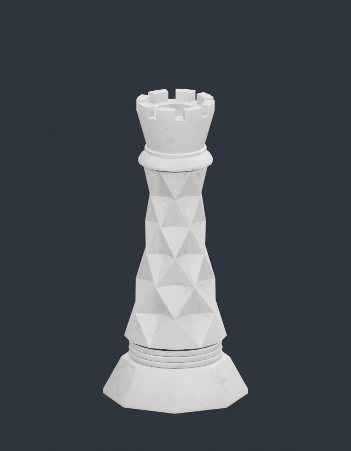
Church: 5728 / 3416 / 1000
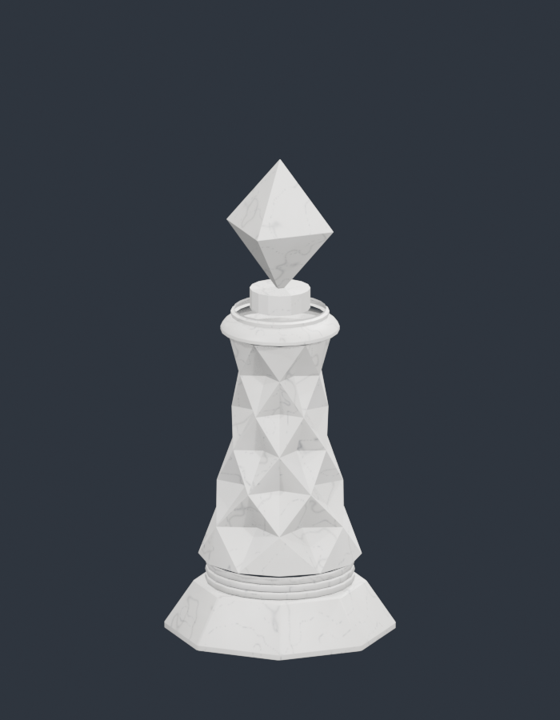
Icon: 5040 / 3104 / 912
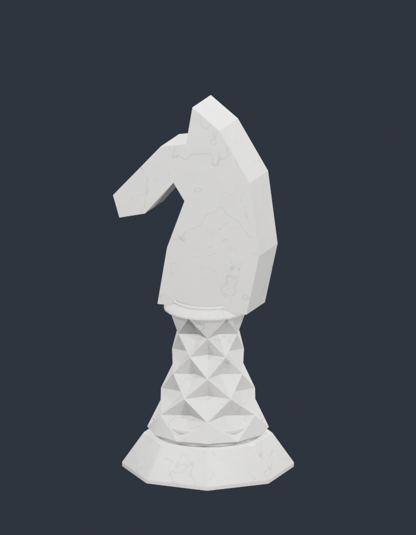
Knight: 4996 / 3052 / 894
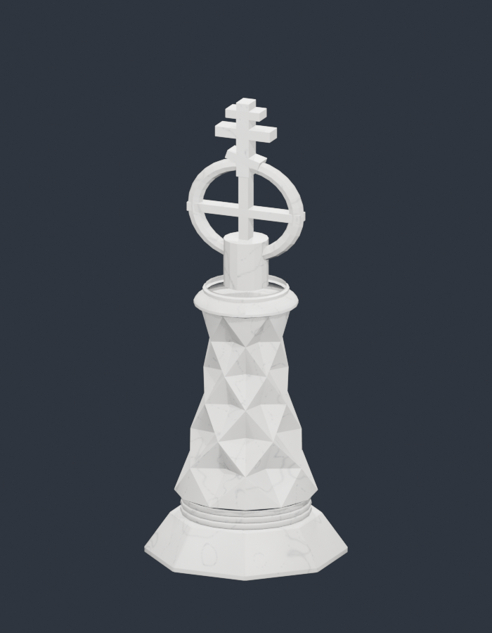
Monastery: 7044 / 4316 / 1262
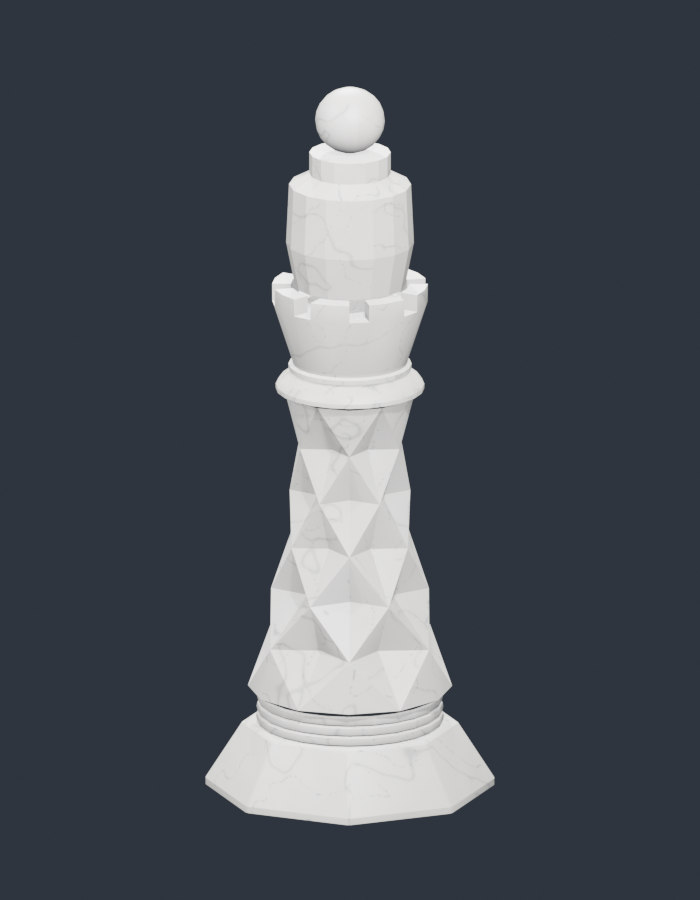
Major: 6612 / 4156 / 1371
Far: No GLB Downloads
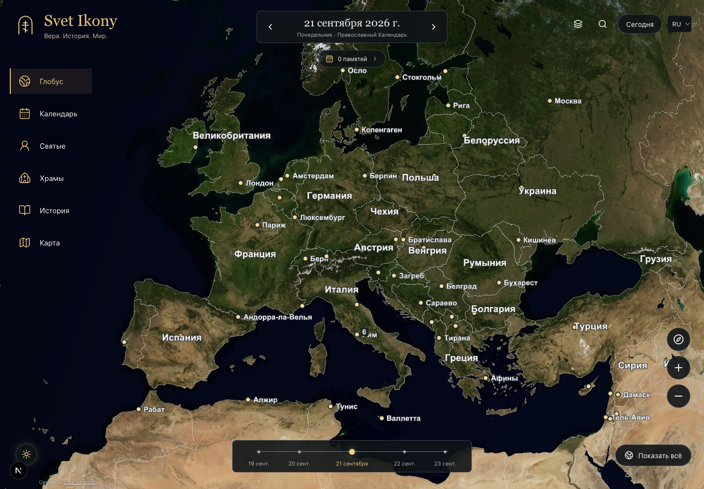
Medium: Native Models
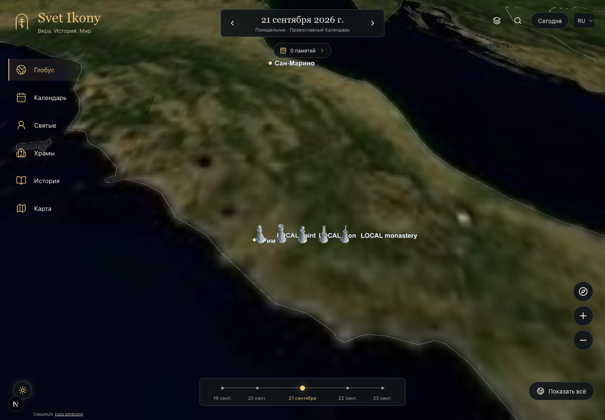
Selected: Ring and Information Card
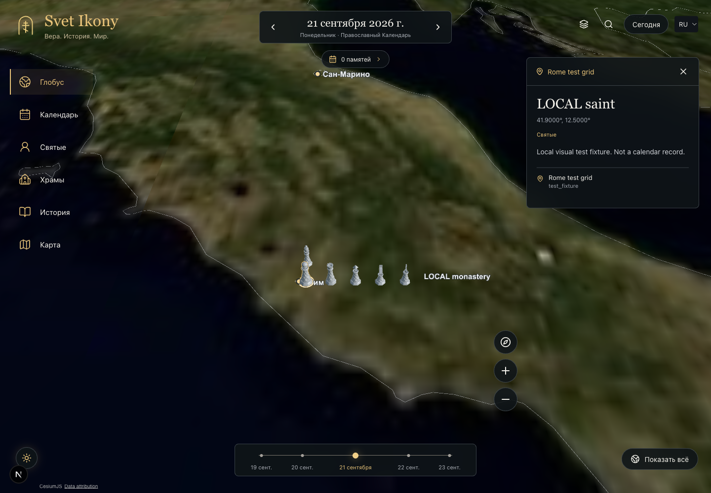
Mobile: Dense Fixture
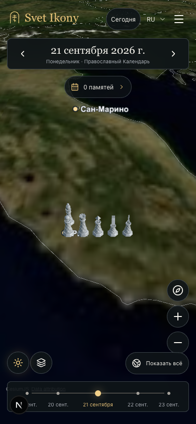